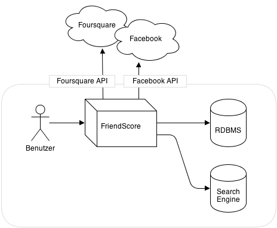
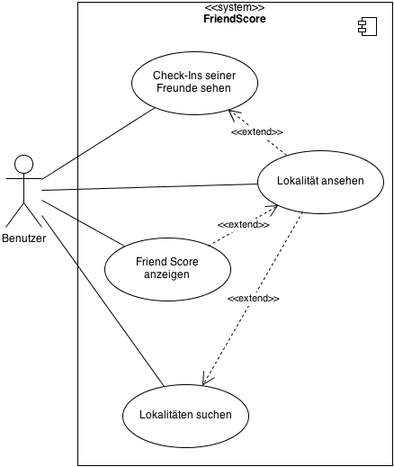
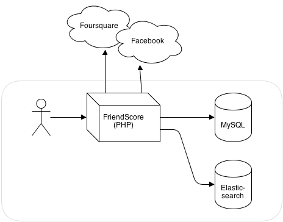
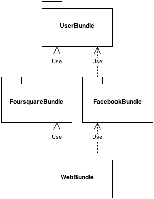
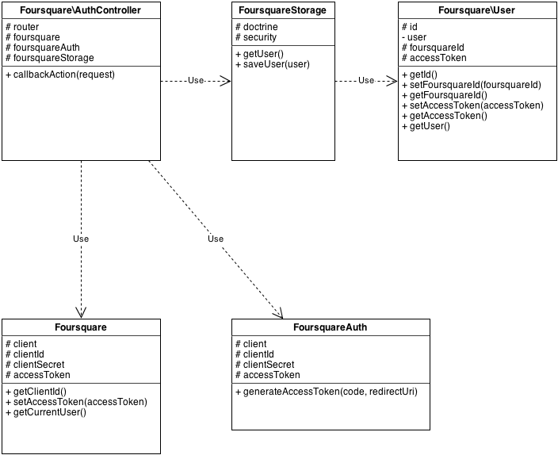
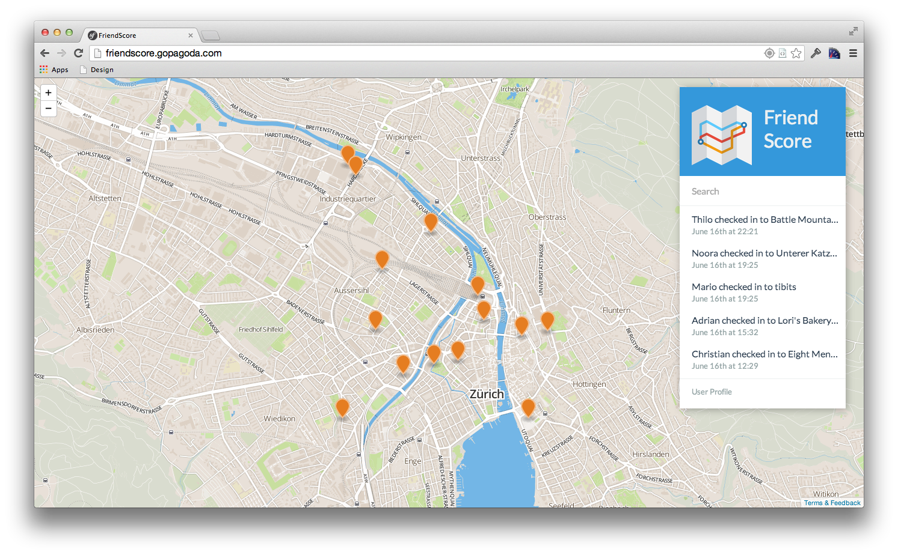

Zurzeit sammeln soziale Netzwerke Informationen und Bewertungen zu
unterschiedlichen Lokalitäten. Es ist gibt jedoch keine Plattform, welche
einen Überblick über Daten aus mehreren Netzwerken und bezogen auf den
Freundeskreis gibt. Es soll deshalb eine Web-Applikation entwickelt werden,
welche dem Benutzer anhand der Informationen aus den sozialen Netzwerken
Empfehlungen (FriendScore genannt) zu Lokalitäten abgeben kann.
Weiter sollen die Interaktion der Freunden mit diesen Lokalitäten
dargestellt werden.
Ziele der Arbeit
Das Entwicklen einer Web-Applikation mithilfe eines Frameworks in PHP und MySQL
soll geübt und das Wissen darin vertieft werden. Zudem soll Erfahrung in der
Anwendung von Suchindexen und der Umgang mit APIs von sozialen Netzwerken
gesammelt werden. Dem Benutzer soll die Möglichkeit geboten werden nach einer
Lokalität seiner Wahl zu suchen. Die Applikation untersucht darauf hin wie
seine Freunde, Follower etc. mit der gewünschten Lokalität interagiert haben.
Daraus wird ein sogenannter FriendScore berechnet. Speziell an diesem Ansatz
ist, dass die Applikation keine eigene Datensätze über eine Lokalität anlegen
und pflegen muss, sondern diese anhand der Freunde aggregiert werden.
Aufgabenstellung
Definition der Anforderungen der zu entwickelnden Web-Applikation. Analyse von
APIs von drei sozialen Schnittstellen. Umsetzung einer Web-Applikation mit
Einbezug der zwei geeignetsten APIs. Verwendung eines Suchindexes um die Suche
für die Benutzer zu vereinfachen. Fazit erstellen inkl Review und Ausblick.
Anforderungen
Übersicht
Es soll eine Web-Applikation umgesetzt werden, um die Check-Ins von Freunden in
unterschiedlichen Sozialen Netzwerken anzuzeigen. Der Benutzer soll sich in der
Web-Applikation registrieren und dann einloggen können.
Hat er sein Konto mit
mindestens einem Sozialen Netzwerk verbunden, werden jeweils um 07:00 Uhr die
Check-Ins von Freunden innerhalb der letzten 24 Stunden aus allen verbundenen
Netzwerken importiert.
Beim nächsten Login des Benutzer werden dann alle Lokalitäten mit Check-Ins von
Freunden sowie die Beurteilung des Systems angezeigt.
Kontextabgrenzung

Kontextdiagramm
Der Benutzer greift auf eine Web-Applikation zu, welche die APIs von Sozialen
Netzwerken verwendet, um derren Daten in eine Datenbank zu importieren. Der
Benutzer ist dabei die einzige Person, die mit dem System aggiert - die Freunde
des Benutzers müssen keine direkten Aktionen am System vornehmen und die Abfrage
der Daten über die APIs geschieht automatisiert.
Für die Speicherung der Daten sind zwei unterschiedliche Speicher notwendig:
Die Benutzerdaten werden in einer einfachen Datenbank gespeichert (RDBMS),
während die Check-Ins der Benutzer in einer Suchmaschine (Search Engine)
gespeichert werden, welche Volltext und Geografische Suchabfragen erlaubt.
Anwendungsfälle

Anwendungsfalldiagramm FriendScore
Name
Check-Ins seiner Freunde sehen
Priorität
hoch
Beschreibung
Der Benutzer soll die Check-Ins seiner Freunde in
hierarchischer Reihenfolge sehen können. Es werden nur die
letzten 5 Check-Ins angezeigt, ältere Check-Ins können nicht
angezeigt werden.
Vorbedingungen
Der Benutzer muss sich registiert und eingeloggt haben. Er muss
zudem sein Konto mit mindestens einem Sozialen Netzwerk
verbunden haben.
Name
Lokalität ansehen
Priorität
tief
Beschreibung
Eine Detailansicht soll dem Benutzer den Namen und die
Position einer Lokalität anzeigen. Die Position soll auf einer
Karte dargestellt werden. Zudem sollen die Namen von Freunden
aufgelistet werden, welche in der Lokalität eingecheckt haben.
Vorbedingungen
Der Benutzer gelangt entweder über den Check-Ins eines Freundes
auf eine Lokalität oder hat diese über die Suche gefunden.
Name
Lokalitäten suchen
Priorität
tief
Beschreibung
Der Benutzer soll mit einem Textfeld nach beliebigen Lokalitäten
suchen können. Es soll eine Volltextsuch im Namen aller
Lokalitäten durchgeführt werden. In einer Liste sowie auf einer
Karte sollen maximal 5 Resultate angezeigt werden.
Vorbedingungen
Der Benutzer muss sich registiert und eingeloggt haben. Er muss
zudem sein Konto mit mindestens einem Sozialen Netzwerk
verbunden haben.
Name
FriendScore anzeigen
Priorität
hoch
Beschreibung
Der Benutzer soll anhand der Checkins seiner Freunde einen Score angezeigt bekommen, welcher basierend auf der Häufigkeit der Checkins der Freunde berechnet wird. Dieser Score, gennant FriendScore, befindet sich zwischen 0 und 100%.
Vorbedingungen
Der Benutzer muss sich registiert und eingeloggt haben. Er muss
zudem sein Konto mit mindestens einem Sozialen Netzwerk
verbunden haben.
Ein Freund muss mindestens an einer Lokalität eingecheckt haben.
Projektmanagement
Projektteam
Das Projektteam setzt sich aus Fabian Vogler und Cyril Gabathuler zusammen.
Fabian Vogler analysiert die APIs von Instagram und Foursquare, während Cyril
Gabathuler die APIs von Twitter und Facebook untersucht. Bei der Umsetzung
wird die Integration der APIs mit der Karte von Fabian Vogler durchgeführt und
Cyril Gabathuler befasst sich mit der Implementierung des FriendScores.
Projektplanung
Der folgende Projektplan gibt einen Überblick über den Ablauf des Projekts
und dessen wichtigsten Meilensteine.
März
April
Mai
Juni
Kick-Off
◆ 13.03.13
Aufgabenstellung
Erfassung EBS
◆ 22.03.13
Umsetzung
Testing
Dokumentation
Abgabe Dokumentation
◆ 16.6.13
Präsentation
Schlusspräsentation
◆ 19.06.13
Projektplanung
Aufwand
Laut Reglement sollte der Aufwand pro Student 60 Stunden betragen. Entsprechend wurde
die Planung darauf ausgelegt. Grosse Hindernisse waren unter anderem externe
Services, wie die Anbindung der sozialen Netzwerke über ihre Webschnittstellen.
Beschreibung
Soll
Ist
Projekt aufsetzen
4h
4h
Analyse Instagram
4h
6h
Analyse Foursquare
4h
4h
Analyse Facebook
4h
4h
Analyse Twitter
4h
6h
Integration ElasticSearch
14h
15h
Crawler für Foursquare
8h
8h
Crawler für Facebook
8h
10h
Web Interface
10h
9h
Darstellung der Daten
8h
9h
Berechnung FriendScore
8h
9h
Dokumentation
40h
42h
Präsentation
4h
3h
Total
120h
129h
Soll / Ist Vergleich Aufwand
Analyse APIs
Gemäss Aufgabenstellung soll die Web-Applikation mit zwei APIs unterschiedlicher
sozialer Netwerke umgesetzt werden.
Mit einer detailierten Analyse der APIs sollen diese auf derren Funktionsumfang
und Eignung für das Projekt geprüft werden.
Facebook
Facebook ist ein soziales Netzwerk um mit
Freunden und Bekannten in Kontakt zu treten. Facebook ist das grösste soziale
Netzwerk der Gegenwart mit über einer Milliarde Mitgliedern. Über Apps auf
diversen Plattformen können Benutzer Statusupdates erfassen, sich an einem
Ort einchecken, Fotos der letzten Ferien veröffentlichen oder mit anderen
Benutzern chatten. Zentral ist der Newsfeed, in welchem alle Informationen der
Freunde bereitgestellt werden. Dies erlaubt es dem Benutzer einfach Stories zu
"liken" oder einen Kommentar zu hinterlassen.
Inhalte
Facebook stellt eine umfassende API
zur Verfügung. Der Entwickler muss sich bei Facebook registrieren und bestimmen
auf welche Daten eines Benutzers er zugreifen möchte. Dies kann von der Emailadresse
bis zu den religiösen Ansichten der Freunde des Benutzers gehen.
Nach der Registrierung kann via dem OAuth Verfahren eine spezielles Token beantragt
werden. Dieses Token wird für die weitere Verwendung in die Datenbank gespeichert.
Via einfacher HTTP Requests ist dann der Zugriff auf die API gestattet.
Über die Ressource /me können diverse Felder des Benutzer abgefragt werden.
Dieser Aufruf ist wichtig um die eindeutige id eines Benutzers zu erhalten.
Mit der id werden alle weiteren Aufrufe gegen die API gestartet.
Um an Informationen der Freunde eines Benutzer zu gelangen muss folgende Ressource
aufgerufen werden:
Facebook bietet über ihre API ein enormes Potenzial, weil auf so gut wie alle Daten
eines Benutzer zugegriffen werden kann. Natürlich unter der Voraussetzung, dass der
Benutzer den entsprechenden Zugriff erlaubt hat.
Die API bietet einen sehr tiefen Einblick in den sozialen Graphen eines Benutzers
und dessen Freunde. Daher ist es entsprechenden einfach die von uns gewünschten
Daten zu aggregieren.
Ein weiteres sehr spannendes Thema ist die
RealTime API.
Diese erlaubt es dem Entwickler Interesse für gewisse Felder zu bekunden. Bei einem
Update dieser Felder wird er automatisch von Facebook benachrichtigt.
Instagram
Instagram ist eine soziales Netzwerk zum
Teilen von Fotos. Die Fotos können über
die Android- oder iPhone-App von Instagram hochgeladen werden. Die App bietet
zudem die Möglichkeit, die Fotos mit vordefinierten Fotofiltern zu versehen und
dem Foto die GPS-Koordinaten zu hinterlegen. Innerhalb der App können dann auf
dem Profil eines Benutzers die Fotos auf einer Karte angezeigt werden.
Die von Instagram zur Verfügung gestellte
API ist nach einer Registrierung
frei nutzbar. Die Authentifizierung erfolgt über OAuth und die API selbst
funktioniert danach mit einfachen HTTP-Anfragen. Nach der Authentifizierung des
Benutzers bei Instagram erhält die Applikation einen benutzerspezifischen
Zugriffs-Token, welcher in der Datenbank gespeichert und für zukünftige Anfragen
verwendet werden kann.
Inhalte
Über die Ressource /users/self/feed können direkt sämtliche Fotos
von Freunden abgerufen werden. Die Antwort enthält maximal 30 Fotos, weitere
Fotos können aber über eine in der Antwort mitgelieferte URL abgerufen werden
(Feld next_url). Dieses Feld ist auch in Folgeantworten enthalten
und somit können mit wiederholten Abfragen sämtliche Fotos abgerufen werden, bis
das Feld next_url leer ist.
Sofern verfügbar werden auch die Koordinaten, an welchen das Foto gemacht wurde,
in der Antwort zurück gegeben.
Zusätzlich besteht die Möglichkeit, über die Ressource /locations/search
und dem Parameter foursquare_v2_id einen bestimmten Ort anhand einer
Foursquare ID zu suchen und Fotos von dort abzurufen. Dies ist in Kombination
mit der Foursquare-API interessant.
Zugriffsmethoden
Neben dem direkten Aufruf der API wurden auch die Libraries
Instaphp und
PHP-Instagram-API
evaluiert. Da aber beide nur eine weitere Abstraktionsschicht für die
HTTP-Aufrufe an die API darstellen, wurde entschieden, keine der beiden
einzusetzen. Durch den direkten Aufruf der API wird zum einen das Testing
transparenter und das Verstäntnis in Bezug auf Besonderheiten der API wird
gefördert.
Nutzungsbedingungen
Die Nutzungsbedingungen der API weisen darauf hin, dass die Fotos dem
jeweiligen Urheber gehören und mit dem entsprechenden Hinweis versehen werden
müssen:
Although the Instagram APIs can be used to provide you with access to Instagram
user photos, neither Instagram's provision of the Instagram APIs to you nor your
use of the Instagram APIs override the photo owners' requirements and
restrictions, which may include "all rights reserved" notices (attached to each
photo by default when uploaded to Instagram), Creative Commons licenses or other
terms and conditions that may be agreed upon between you and the owners.
Die API ist einfach benutzbar und es traten keine technischen Probleme bei der
Evaluation auf. Die Fotos lassen sich anhand der Koordinaten zu einer bestimmten
Ort zuordnen und können in der Applikation kontextbasiert angezeigt werden, um
die Beuurteilung des Orts dem Benutzer zu erleichtern.
Foursquare
Foursquare ist ein soziales Netzwerk um
Besuche an realen Orten mit Freunden zu teilen und Tipps zu hinterlassen. Über
eine Android- und iOS-App kann sich der Benutzer anhand seiner aktuellen
Position an einem umliegenden Ort einchecken und sehen ob bereits Freunde
an diesem Ort waren. Mit der App kann sich der Benutzer auch Empfehlungen zu
umliegenden Orten anhand der Aktivitäten seiner Freunde geben lassen.
Inhalte
Über die Ressource /checkins/recent können zwar Besuche von
Freunden abgerufen werden, jedoch ist diese Abfrage auf 100 Resultat limitiert
- ältere Daten sind somit über diese Ressource nicht abrufbar. Leider gibt es
über die Foursquare API keine Möglichkeit, die vollständige Historie von
Besuchen von befreundeten Personen abzurufen.
Bei Aufrufen von spezifischen Lokalitäten werden jedoch die bereits dort
gewesenen Freunde zurück geliefert. Zudem können über die Ressource
/venues/explore Lokalitäten, welche bereits von Freunden besucht
wurden, abgefragt werden. Dazu ist jedoch die Übergabe von Koordinaten nötig
und die Antwort beschränkt sich auf die nährere Umgebung.
Foursquare verfügt über eine grosse Anzahl an Informationen über Lokalitäten,
welche wir über die API einfach abfragen können. Leider können die Aktivtäten
von Freunden nicht direkt abgefragt werden - durch die Suche anhand von
Koordinaten ist es jedoch möglich, die API zusammen mit den Koordinaten aus
einer anderen API zu benutzen.
Twitter
Twitter ist ein Dienst, welcher den Usern
ermöglicht so genannte Tweets zu erfassen. Diese Tweets müssen sich jedoch auf
140 Zeichen beschränken. Jeder User kann anderen Usern followen bzw. er selber
besitzt Follower. So lassen sich Tweets mit einem @ Zeichen an bestimmte Personen
widmen. Viele Benutzer verwenden einen Hashtag um einen Tweet mit Metadaten zu
versehen.
Twitter hat für jede Plattform eigene Apps bzw. eine grosse Anzahl von Drittanbietern,
welche Apps bereitstellen.
Inhalte
Twitter stellt sehr viele Developer Ressourcen
bereit. Diese reichen von einfachen Beschreibungen der API's über den Ablauf einer
OAuth Authentifizierung. Speziell zu erwähnen ist, dass Twitter sich bisher noch
nicht für OAuth2 entscheiden konnte. Erst sehr wenige API's von Twitter unterstützen
den neuen Standart. Die Authentifizierung gegenüber OAuth1 ist komplex und verwendet
spezielle HTTP-Header Atrribute. Für Twitter sei der OAuth2 Standart noch zu wenig
ausgreift und warten ab bis eine endgültige Spezifikation des Standarts herausgegeben wird.
Interessant für das Projekt FriendScore sind die Daten der Follower eines Users. Über die Ressource /1.1/friends/ids.json erhält man die eindeutigen Id's der Follower des Benutzers. Anhand dieser Id ist es dann möglich auf die Timeline eines Users zuzugreifen. Die Timline des Users enthält alle seine Tweets und den dazugehörenden Metadaten wie z.B. die Geolocation des Tweets. Die Timeline Ressource ist unter /1.1/statuses/user_timeline.json zu finden.
Die Twitter API bietet enorm viele Daten, was die API schwer verständlich macht. Die Authentifizierung steckt immer noch bei OAuth1 was zusätzlichen Aufwand bedeutet. Twitter hat spezielle Richtlinien erstellt wie z.B. ein Tweet bei einem externen Service dargestellt werden muss. Weiter hat Twitter eine relativ tiefe Grenze an maximal Anzahl User für eine App eingeführt.
Insgesamt ist zu sagen, man kommt an die Daten welche man braucht aber es geht nicht ohne einen Zusatzaufwand. Wie auch Facebook bietet eine eine Streaming API an um Daten in Realtime zu erhalten.
Architektur
Übersicht

Übersicht System
Die Web-Applikation FriendScore wurde mit PHP geschrieben und läuft auf einem
zentralen Server. Bei der Registrierung werden die Benutzerdaten in einer
MySQL-Datenbank gespeichert. Über einen Cron-Job werden die Check-In-Daten
des Benutzers regelmässig über APIs von Foursquare und Facebook gelesen und
in ElasticSearch gespeichert.
Applikation
Die Klassen der PHP-Applikation wurden auf verschiedene Pakete (Bundles)
aufgeteilt, um die Funktionalität logisch zu trennen. Das
UserBundle stellt die Funktionalität für einen einfachen Benutzer
zur Verfügung, welche von den einzelnen Schnittstellen um Attribute wie z.B. ein
Token erweitert werden kann.
Pro Schnittstelle existiert ebenfalls ein Paket, welche die Anbindung der API
verwaltet. Das WebBundle nutzt diese, um die unterschiedlichen
Informationen daraus darzustellen.

Paketdiagramm FriendScore
Für die Web-Applikation kommt eine an das Web angepasster Form der
Model–View–Controller-Architektur zur Anwendung, welche mithilfe des
PHP-Frameworks Symfony in der Version 2.2
umgesetzt wurde.

Klassendiagramm Bundle Foursquare
Das Model setzt sich aus den gespeicherten Daten und der Business-Logik
zusammen. Exemplarisch wird hier das FoursquareBundle beschrieben,
wobei die Klassen Foursquare, FoursquareAuth und
FoursquareStorage das Model bilden. Die View ist für die
Darstellung der Daten zuständig. Diese Funktion wird im Fall von Symfony durch
die Template-Engine Twig übernommen.
Der Controller nimmt Benutzeranfragen entgegen und ruft die nötigen Befehle aus
dem Model auf. Er gibt dann die Daten aus dem Model an die View weiter, damit
diese die Daten darstellen kann.
Testing
Getestet wird die Applikation mit der Software
PHPUnit, welche es
erlaubt Unit Tests in PHP zu schreiben und auszuführen. Die Tests sind einfache
PHP-Klassen und befinden sich jeweils in den einzelnen Bundles im
Unterordner Tests (z.B.
src/FriendScore/FoursquareBundle/Tests).
Ausgeführt werden können die Tests mit bin/phpunit -c app/ auf der
Kommandozeile. Die Code Coverage findet sich danach auch als HTML-Datei im
Ordner app/coverage. Nachfolgend der Aufruf der Tests inklusive
der Ausgabe auf der Kommandzeile:
$ bin/phpunit -c app/
PHPUnit 3.7.21 by Sebastian Bergmann.
Configuration read from app/phpunit.xml.dist
..........
Time: 0 seconds, Memory: 8.25Mb
OK (10 tests, 37 assertions)
FriendScore
Idee
Die Idee hinter dem FriendScore ist der Vorschlag von Lokalitäten basierend auf den Checkins der Freunde des Users. Je intensiver Freunde mit einer Lokalität inteagiert haben, desto höher steigt die Wert für den FriendScore.
Ein User erhält einen Einblick über Lokalitäten mit welchen seine Freunde intensiv inteagiert haben. Darauf basierend lassen sich Vorschläge über Lokalitäten anzeigen. Es ist davon auszugehen, dass Lokalitäten mit einem hohen FriendScore den Geschmack des Users gut treffen. Dies basierend auf der Annahme, dass die Geschmäcker innerhalb eines Freundenkreises meistens relativ ähnlich sind.
Berechnung
Basierend auf den Checkins von Freunden werde Punkte verteilt. Nach dem alle Checkins der Freunde für eine Lokalität analysiert worden sind werden die einzelnen Punkte aufsummiert. Die daraus resultierende Summe wird als FriendScore bezeichnet.
Die Berechnung des Basispunkts für einen Checkin basiert auf folgender Formel:
Momentan werden zwei, Facebook und Foursquare, soziale Netzwerke unterstützt. Es werden mindestens 3 Checkins pro Lokalität benötigt um die maximale Anzahl Punkte zu erhalten. Daraus resultiert folgender Wert für den Basispunkt:
1 / (3 * 2) / 2 = 0.08333...
Wie zu erkennen ist werden die Checkins doppelt bewertet. Es wird davon ausgegangen, dass der mehrfache Besuch einer Lokalität des gleichen Freundes eine höheren Stellenwert hat wie nur ein einzelner Besuch. Eine Gewichtung der sozialen Netzwerke wird momentan nicht vorgenommen. Dies könnte aber in der Zukunft in die Formel einfliessen.
Pro Checkin wird nun der Basispunkt verteilt. Sollte ein Freund mehr als einmal eingecheckt habe werden seine Punkte doppelt gezählt. Die maximale Punktzahl kann nur erreicht werden wenn ein Freund drei mal am gleichen Ort eingecheckt hat. Die maximale Punktzahl pro sozialen Netzwerk beschränkt auf folgende Formel, da die Punkte linear über die Netzwerke verteilt werden.
Maximum pro Netzwerk = 1 / (x Anzahl der verfügbaren Netzwerke)
In unserem Fall also:
1 / 2 = 0.5
Beispiel
Als Beispiel wird das Restaurant Sonne verwendet. Es stehen Checkins von Hans und Susanne zur Verfügung.
Hans hat die Sonne insgesamt drei Mal besucht. Zwei Mal hat er sich via Facebook eingecheckt. Das dritte Mal verwendete Hans Foursquare.
Susanne hat die Sonne vier Mal besucht. Sie checkte sich jedes mal mit Foursquare ein.
Es wird maximal mit 3 Checkins gerechnet. Ebenfalls werden diese doppelt genommen, da Susanne mehr als einmal in der Sonne war. Die Punkte von Hans fliessen nicht mehr in die Berechnung ein, da die maximale Punktzahl für ein einzelens Netzwerk bereits erreicht worden ist.
Wie zu erkennen ist, ist die Berechnung des FriendScore schon bei einem einfachen Beispiel relativ komplex. Es wurde versucht von Anfang die variablen Bedingungen der Berechnung tief zu halten. Natürlich wird sich der Algorithmus in Zukunft weiterentwickeln und noch genauer werden.
Zusammenfassung
Ausgangslage
Heutzutage brauchen viele Menschen soziale Netzwerke wie Facebook und Twitter. Es werden immens viele Daten in diesen Netzwerken gelagert. Wir wollten eine "Vorschlage" - Service basierend auf den Daten der eigenen Freunde erstellen. Unser Service FriendScore analysiert die Checkins seiner Freunde und berechnet daraus einen sogennanten FriendScore. Dieser Score sagt aus, wie intensiv die Freunde mit einer Lokalität interagieren.
Vorgehensweise
Die API's von Facebook, Foursquare, Twitter und Instagram wurden analysiert. Im speziellen wurde untersucht, ob die Netzwerke die Daten der Freunde, Follower etc. zur Verfügung stellen und wenn ja ob diese Daten die notwendigen Informationen für das Projekt FriendScore liefern.
Wie sich herausgestellt hat, haben alle vier API's unsere Anforderungen erfüllt. Wir haben uns dann entschieden mit den Daten von Facebook und Foursquare einen Prototypen zu schreiben.
Technologien
Der Prototyp ist eine PHP-Applikation basieren auf dem Framework Symfony 2.2. Für die Userverwaltung wurde eine MySQL Datenbank verwendet.
Die Daten der sozialen Netzwerke werden in einer ElasticSearch Datenbank gespeichert. Dies vereinfachte uns das Suchen nach bestimmten Lokalitäten und die Datenbank unterstützt von Haus aus eine Geo Attribut.
Die verschiedenen Checkins werden mit dem Web-Service MapBox auf einer Karte dargestellt.
Die Berechnung des FriendScores basiert auf einem eigens entwickelten Algorithmus. Der Algorithmus legt sein Hauptaugenmerk auf mehrfache Checkins eines gleichen Freundes.
Prototyp
Dies ist die Startseite von FriendScore, nach dem sich der User mit einem Netzwerk verknüpft hat. Wie schon erwähnt werden die verschiedenen Checkins auf der Karte visualisiert.

Screenshot Web-Applikation FriendScore
Anhang
Quellenverzeichnis
Abbildungsverzeichnis
Glossar
Template-Engine: Interpretiert einen einfachen Syntax im HTML-Code und
verbindet diesen mit Daten zu einer fertigen HTML-Seite.
API: Application Programming Interface, bezeichnet die Schnittstelle, über
welche der Client Daten vom Server abruft.
Client: Ein Anwendungsprogramm, welches auf dem Gerät des Benutzers läuft und
meist mit einem Server kommuniziert.
REST: Representational State Transfer, ist eine Architektur für eine API, welche
die nach HTTP definierten Regeln befolgt.
Bundle: Zusammenfassung mehrerer Klassen und Konfigurationsdateien innerhalb
eines Symfony-PHP-Projekts.
HTTP: Hypertext Transfer Protocol, ist ein Protokoll zur Übertragung von Daten
über ein Netzwerk.
HTTP-Header: Feld einer HTTP-Übertragung, welches zusammen mit den Daten im HTTP-
Protokoll übertragen wird.
JSON: JavaScript Object Notation, ist ein kompaktes, lesbares Datenformat,
welches oft im Internet verwendet wird.
XML: Extensible Markup Language, ist ebenfalls ein Datenformat, welches oft
im Internet Verwendung findet, jedoch mächtiger ist als JSON.
Desktop: Computer, welche von einem Benutzer bedient meist an einem Schreibtisch
bedient wird.
RDBMS: Relationales Datenbankmanagementsystem, Software, die zur Speicherung
von Informationen genutzt wird.
Browser: Software zur Darstellung von Websiten aus dem Internet. Beispielsweise
Google Chrome oder Mozilla Firefox.
URL: Uniform Resource Locator, eine Internet-Adresse welche auf eine Ressource
wie z.B. eine Website zeigt.
Code Coverage: Beschreibt, wie viel Prozent des Source-Codes durch Unit Tests
abgedeckt werden.